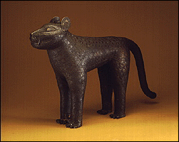

The Minneapolis Institute of Arts
Main Menu ~ Permanent Collection List ~ Interactive Museum Maps ~ Back ~ Next
African Art
 (c) 31k
View a variety of figures, masks, decorative arts, and textiles from West and Central Africa, including a rare 14th-century wooden sculpture, a Yoruba king's beaded crown, and a bronze leopard made for the ruler of Benin. This gallery includes an interactive program.